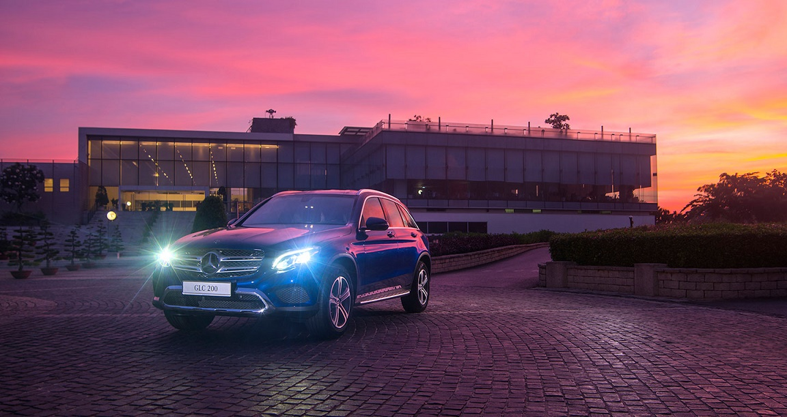
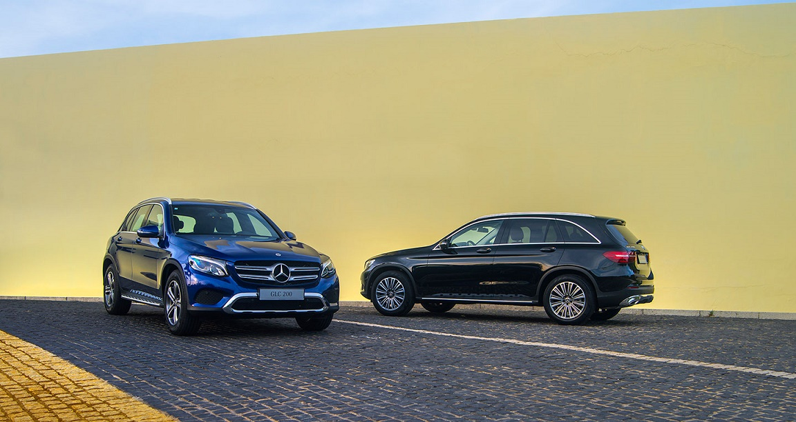
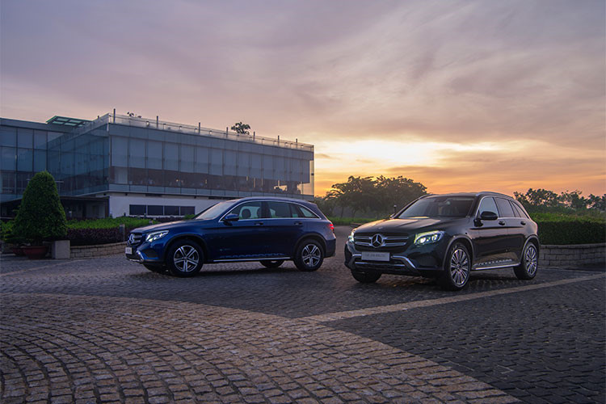
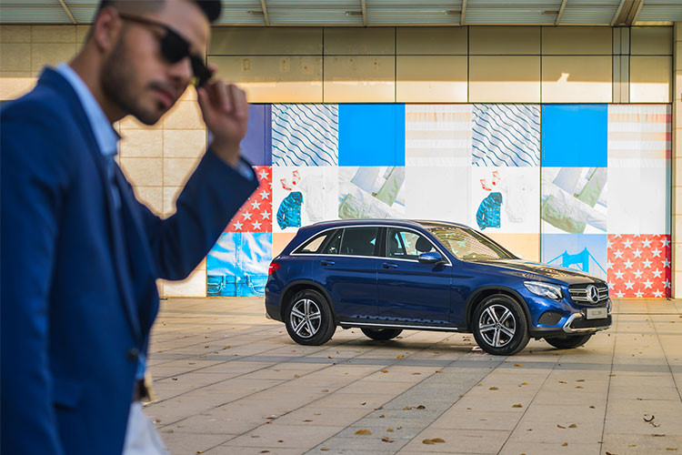
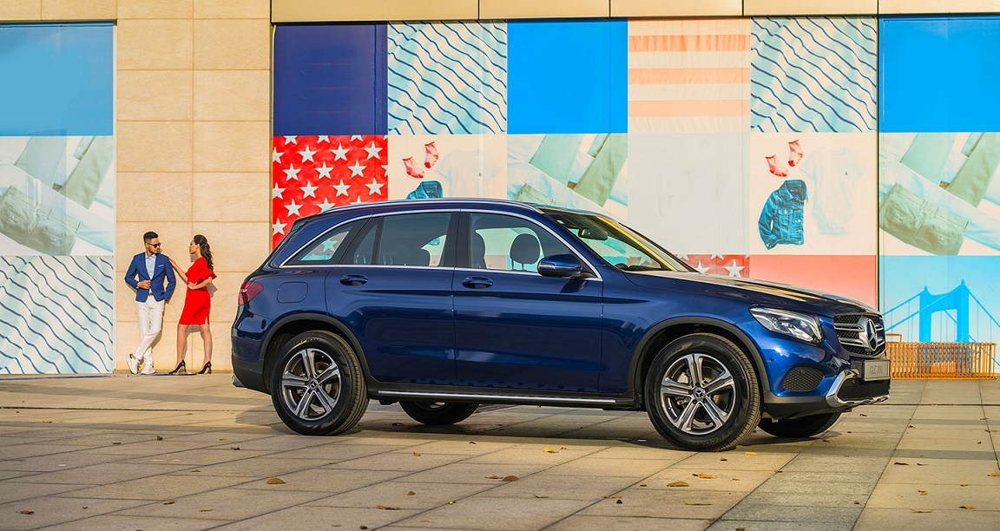
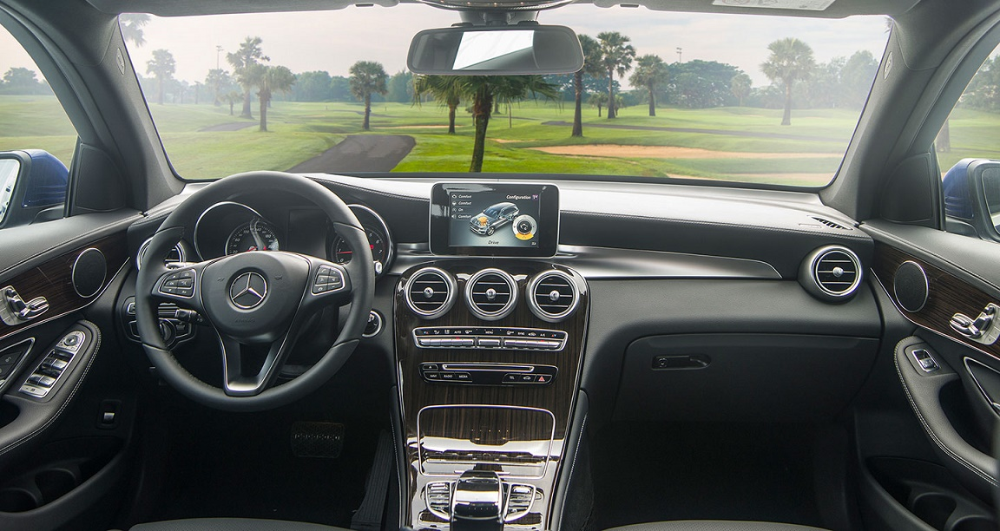
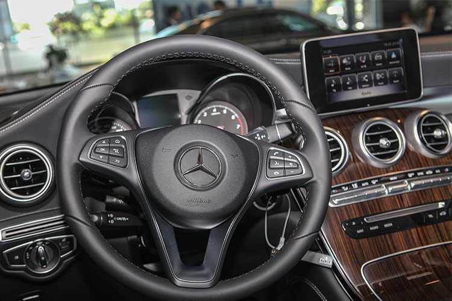
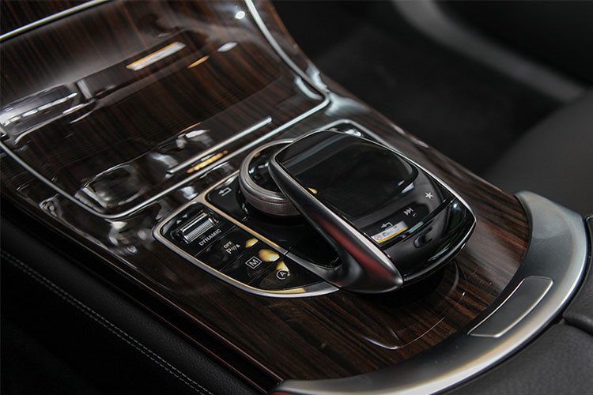
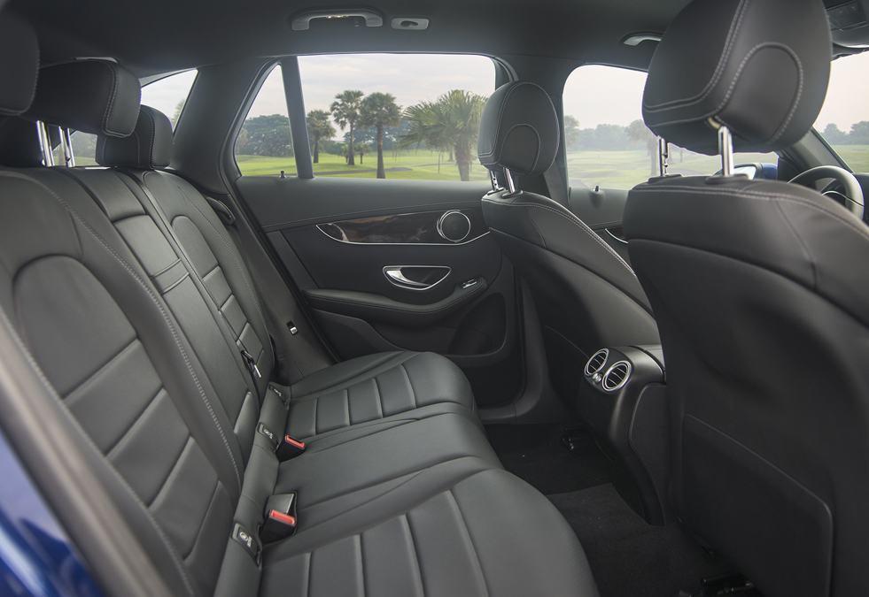

Mercedes GLC 200 2018
MERCEDES GLC 200 2018 – SẢN PHẨM ĐẲNG CẤP HẠNG SANG
Mercedes-Benz Vietnam vừa chính thức trình làng một sản phẩm mới chính là MERCEDES GLC 200 2018. Với thiết kế SUV hạng sang, dòng xe này đã tạo nên một cơn sốt mới trên thị trường xe hơi thế giới bằng những đơn đặt hàng chờ dài từ lúc sản phẩm chưa được ra mắt. Dòng xe GLC này được đánh giá sẽ thay thế cho dòng xe GLK của hãng MERCEDES, khắc phục những yếu điểm, đem lại sự yêu thích cho khách hàng. Với thiết kế 5 chỗ thời thượng, đẳng cấp, sang trọng, GLC đáp ứng dư thừa yêu cầu cao của những người yêu xe ở phân khúc này.
Trong số các siêu phẩm GLC thì MERCEDES GLC 200 2018 vẫn là dòng xe đáng mong chờ nhất tại thị trường Việt Nam. Từ trước khi ra mắt, đây đã là sản phẩm nhận được sự quan tâm bởi sự đổi mới về phần nội, ngoại thất và tích hợp thêm các công nghệ hiện đại.

Giá xe Mercedes GLC 200 2018 mới nhất là: 1.684.000.000 VNĐ
MERCEDES GLC 200 2018, THIẾT KẾ NGOẠI THẤT HOÀN TOÀN MỚI
MERCEDES GLC 200 2018 tung ra thị trường, đã gây ngạc nhiên cho những người hâm mộ yêu xe, bởi thiết kế ngoại hình hoàn toàn khác biệt. Đương nhiên, dòng sản phẩm mới này được đáng giá là mượt mà hơn, phong cách hơn. Xét về kích thước, MERCEDES GLC 200 2018 đang là dòng xe sở hữu số đo giá trị lớn, chiều dài x rộng x cao lần lượt là 4.656 x 1.890 x 1.644 mm. Bên cạnh đó, GLC 200 2018 còn sở hữu chiều dài cơ sở là 2.873 mm, đem lại cảm giác rộng rãi, thoải mái cho khách hàng.
 Dòng xe 5 chỗ ngồi Mercedes GLC 200 2018 có thiết kế ngoại thất sang trọng không ngờ. Những đường nét mượt mà, gọn gàng khiến chiếc xe được đồng nhất, ngoại hình bắt mắt khi mang phong cách trẻ trung hơn hẳn. Tuy nhiên, một điều ngạc nhiên là dù đã sở hữu kích thước khá lớn, trục cơ sở khá dài và còn còn được trang bị thêm các công nghệ vô cùng hiện đại, nhưng trọng lượng của chiếc xe lại giảm đi một lượng đáng kể là 80kg so với các dòng xe cũ. Điều này được thực hiện bởi vì, phần khung xe đã được thay đổi vật liệu thành nhôm, thép cứng và siêu cứng. Một phần thiết kế đáng được ghi nhận nhất chính là phần đầu xe, mặt lưới tản nhiệt hai nan tinh tế, cùng logo ngôi sao 3 cánh ở giữa, làm nổi bật thương hiệu sang trọng của dòng xe thời thượng này.
 Hệ thống cụm đèn pha Mercedes GLC 200 2018 có hiệu suất chiếu sáng cao, được thiết kế sắc nét, cực kỳ sắc sảo, mang tới một cảm giác vừa thời thượng vừa mạnh mẽ. Phụ kiện này được sử dụng công nghệ full LED tích hợp tính năng tự động mở rộng góc chiếu khi vào khúc cua và điều chỉnh độ cao ánh sáng cần thiết. Ngoài ra, ngay phía dưới chính là phần hốc gió lớn, góc cạnh tạo điểm nhấn, giúp cho phần đầu xe toát lên vẻ đẹp thể thao, phong trần.
NỘI THẤT MERCEDES GLC 200 2018, THIẾT KẾ SANG TRỌNG VÀ TINH TẾ
Từ trước đến nay, các dòng xe MERCEDES GLC luôn được đánh giá cao về nội thất thiết kế so với các đối thủ cùng phân khúc. Kế thừa những ưu điểm đó, MERCEDES GLC 200 2018 ngoài được thiết kế tỉ mỉ, chi tiết thì còn mang tới một tinh thần thể thao mạnh mẽ. Các phụ kiện, vật dụng trong xe hầu như được làm từ da cao cấp, ốp gỗ hay các kim loại sáng bóng, mang đến cảm giác sang trọng. Từng đường kim, mũi chỉ, hay từng con bu lông trên tên thương hiệu cho thấy sự tỉ mỉ đáng ngạc nhiên, không gian nội thất được chăm chút kỹ lưỡng.
Mercedes GLC 200 2018 chiếc vô lăng 3 chấu có chứa đầy đủ các phím chức năng, ngoài ra, còn được tích hợp thêm các cụm phím tiện lợi khác nhằm giúp cho người lái dễ dàng di chuyển, vận hành nó. Trước mặt là bảng touchpad được đặt ngay vào vị trí trung tâm. Thiết bị này có chức năng điều khiển cảm ứng các thiết bị có trên xe, giúp người lái chỉ cần chạm nhẹ để thực hiện.
 Riêng đối với phần ghế lái và hành khách của dòng xe Mercedes GLC 200 2018 đều được điều chỉnh 12 hướng điện và bọc da cao cấp. Điều này giúp cho khách hàng dễ dàng điểu chỉnh tư thế và chống thấm mồ hôi một cách tốt nhất.
Giá hấp dẫn hơn mầu đàn anh là Mercedes GLC 300 và Mercedes GLC 250 thế nhưng Mercedes GLC 200 2018 không hề lược bớt đi mà vẫn có đầy đủ trang bị như hệ thống điều hòa tự động cực kỳ tiện ích, nhanh chóng lấy lại không khí trong lành cho người ngồi trong xe dù thời tiết môi trường như thế nào. Đây chính là một ưu điểm lớn của của hãng xe Mercedes đến từ Đức này. Ngoài ra, bạn còn được trang bị thêm cả chức năng kiểm soát tốc độ khi đang đi trên đường, hạn chế tốc độ trong khu vực giới hạn mong muốn.
MERCEDES GLC 200 2018, CƠ CHẾ VẬN HÀNH MẠNH MẼ
MERCEDES GLC 200 2018 cực kì được ưu ái khi sở hữu cho mình một khối động cơ mạnh mẽ I4 đạt dung tích có thể tới 1991 cc, sản sinh công suất cực đại 184 mã lực, Ngoài ra, dòng xe này còn có thêm mô men xoắn cực đại 350 Nm cùng với hộp số tự động 9 cấp 9G-Tronic, dẫn động 4 bánh 4Matic toàn thời gian.
Với cơ chế vận hành này, dòng chiến mã Mercedes GLC 200 2018 có thể tăng tốc từ 0 – 100 km chỉ mất 7,3 (s) và có thể đạt vận tốc cực đại lên tới con số 220 km/h. Ngoài ra, phiên bản này còn được ưu ái khi được sử dụng hệ thống treo thích ứng có tên gọi Agility Control vừa giúp hành khách thoải mái, vừa mang tới cảm giác êm ái.
Bên cạnh đó, Mercedes GLC 200 2018 cũng sở hữu riêng cho mình một hệ thống an toàn tiêu chuẩn. Đó chính là hệ thống hỗ trợ phòng ngừa va chạm có tên gọi Collosion Preventation Assist Plus với khả năng giảm tốc khi người lái đang di chuyển trên đường.
Chức năng dò tìm chỗ đậu xe thích hợp Active parking Assist tích hợp ParkTronic và hệ thống tự động điều khiển bằng tay lái hay phanh xe thích hợp. Nhận biết, người lái xe hay bị mất tập trung khi vận hành xe, hãng xe Mercedes đã tích hợp thêm chức năng cảnh báo mất tập trung Attention Assist cùng phanh tay điều khiển với chức năng thả phanh thông minh, khiến việc lái xe trở nên an toàn và an tâm hơn bao giờ hết.
Với những thông tin được chia sẻ trên đây, bạn đã cảm thấy hào hứng để sở hữu cho mình một chiếc MERCEDES GLC 200 2018 đời mới chưa nào. Hãy nhanh tay ghé ngay các cơ sở kinh doanh dòng sản phẩm này để được trải nghiệm cảm giác mới mẻ trên chiếc xe mạnh mẽ, sang trọng này.